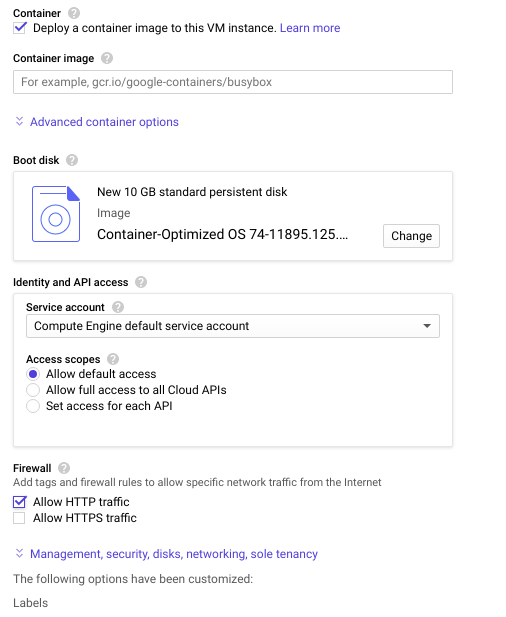

How to deploy a containerized ML app on Google compute engine with GPU
In this blog post i’m explaining how to deploy your Machine Learning webapps that needs GPU to work, on Google compute engine with GPU.you can also try kubernetes for scaling your application , in this post we will cover the steps to deploy applications on GCE(Google compute engine).
Getting started with the Application
Before starting working on the containerization(we are using docker) make sure that your server process inside the container is not set to listen on the localhost (127.0.0.1) address. This refers to the loopback network interface, which is not accessible from outside the container and therefore Compute engine cannot be performed, causing the service deployment failure.
To solve this, configure your application to start the HTTP server to listen on all network interfaces, commonly denoted as 0.0.0.0 . like this on flask.
if __name__ == '__main__':
app.run(host='0.0.0.0', port=5000)
Containerize the application with Docker
In this step, we’ll take a look at how to dockerize application. here i’m explaining with a Flask app.Flask is a microframework for Python, with a basis in Werkzeug and Jinja 2.
1.We need to set up a basic app and Dockerfile
Flask DockerfileWe’re starting from Linux instead of using the Python repository as our base, as its more clear in which Python version is being installed (what apt installs on Ubuntu or Debian, or yum installs on Red Hat and CentOS). You always have the option to build off the python image instead.
FROM ubuntu:latest
MAINTAINER Your_name "you@email.com"
RUN apt-get update -y
RUN apt-get install -y python-pip python-dev build-essential
COPY . /app
WORKDIR /app
RUN pip install -r requirements.txt
ENTRYPOINT ["python"]
CMD ["app.py"]
Let’s go over some of these Docker instructions:
1. MAINTAINER sets the Author field of the image (useful when pushing to Docker Hub)
2. && \ isn’t Docker specific, but tells Linux to run the next command as part of the existing line (instead of using multiple RUN directives, you can use just one)
3. COPY copies files from the first parameter (the source .) to the destination parameter (in this case, /app)
4. WORKDIR sets the working directory (all following instructions operate within this directory); you may use WORKDIR as often as you like
5. ENTRYPOINT configures the container to run as an executable; only the last ENTRYPOINT instruction executes
6. pip installs from requirements.txt as normal. Since requirements.txt only references Flask 0.1.0, pip only installs Flask 0.1.0. If you are using Flask for your app, then you’re likely to have more modules specificed for installation.
Build the image
Now that we have a Dockerfile, let’s verify it builds correctly:
docker build -t flask-tutorial:latest .
After the build completes, we can run the container:
docker run -d -p 5000:5000 flask-tutorial
Push the image to google container registry
Push the image to google container registry
Before pushing image to Google container registry, you must add the registry name and image name as a tag to the image.
us.gcr.io — hosts your images in the United States.
eu.gcr.io — hosts your images in the European Union.
asia.gcr.io — hosts your images in Asia.
docker tag {user-name}/{sample-image-name} gcr.io/{project-id}/{sample-image-name}:{tag}
Then, use gcloud command-line tool to push the image to the Google Container Registry
gcloud docker — push gcr.io/your-project-id/{project-id}/{sample-image-name}:{tag}
if you’re facing trouble to push image to gcr because of Authentication issues please click here
Create VM instanceCompute ->VM instances -> New VM instance
Fill the configurations such as name,region,zone . customize your GPU from Machine type . in container option check the checkbox then you will see a click down option to set the container image path that we have already pushed to google like shown in the picture for example gcr.io/project/flask-app and check Run as privilaged in the advanced container option also check the Allow HTTP traffic in firewall option
It will take couple of minutes to create the VM . once your VM instance is created you can see your application is deployed at here
htttp://{External IP}:5000